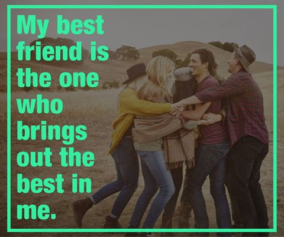
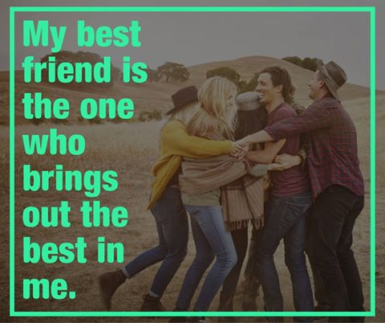

Article1


Няколко дни след първото ми събитие, свързано с осъществяване на моята мечта – Да вдъхновявам и мотивирам хората, реших да седна и да напиша първата си статия. Избрах този цитат („Започни преди да си готов“), защото той перфектно описва това, което се случи в четвъртък 14.Юли от 19:00 до 21:00 часа в зала „Tech & Knowledge“ на Софтуерния Университет в София. Аз започнах преди да съм готов! Направих първата крачка на „Свръхчовека: Как да живеем живота на мечтите си“ посредством лекция-презентация-разказ, която изобщо не бях планирал. Просто възможността се появи и аз я „грабнах“. Самият факт, че основното съдържание на проекта ми още не е налично показва, че „започнах преди да съм готов“. Сигурно се питате какво ще бъде „основното съдържание“, но за това ще ви разкажа малко по-натам. За сега ще се придържаме към мечтата ми, плановете за осъществяването й и моето първо събитие. Моето първи събитие беше прекрасно. Чувството да не поканиш никого лично, но да се появят хора, които са ти приятели, състуденти, както и напълно непознати, за да видят кой си и какво искаш да кажеш, е невероятно! Успях да разкажа много накратко за себе си и опита, който съм придобил за последните няколко години, тренирайки редовно, хранейки се възможно най-чисто и превръщайки се в най-добрата версия на мен самия. Пропуснах ужасно много неща, които щеше да е хубаво да кажа. Възможно е да има хора, които да са останали разочаровани от съдържанието на моята „презентация“, но целта ми не беше да давам акъл (както видяхте и ракия не носех, така че нямаше как да дам и ракия), а да се опитам да провокирам желание за действие, разказвайки за ползите, които моят труд в залата донесе на мен самия. Моят живот се промени към по-добро във всяко едно отношение. В основата на това беше да започна съзнателно да следя какво ми казва тялото при всяко действие/бездействие и при всяко хранене/отсъствие на такова. Моля ви, вгледайте се в знаците, които вашите тела и умове ви дават ежедневно. Това е пътят, който неминуемо ще ви доведе до открития, свързани с това как да промените живота си и да бъдете по-щастливи. Защо започнах преди да съм готов? Защото ако не аз, кой? Защото ако не сега, кога? Никой няма да започне да работи по това аз да сбъдна своята мечта. То не е и работа на никого да го прави. Аз съм единственият, който е отговорен за това. Аз съм единственият, на когото тази мечта (Точно тази конкретна мечта!) е дадена и моето бездействие би я убило. Ако хора като Майкъл Джордан и Хенри Форд не бяха работили върху сбъдването на своите мечти, те нямаше да станат известни като едни от най-успешните хора, живяли някога. Ако Томас Едисон беше положил тези над 10 000 опита, за да създаде електрическата крушка, никой, никога нямаше да е чувал за него. За това, аз – Георги Ненов, реших да действам! След като с колегите от СофтУни решихме да има такова събитие – „Свръх-човекът: как да бъдем по-здрави“ реших, че няма как това да не е „знакът, който търся“. “I have been impressed with the urgency of doing. Knowing is not enough; we must apply. Being willing is not enough; we must do.” /Leonardo da Vinci/ Започнах! По пътя си ще се срещам с успешни хора и вдъхновяващи примери, които ще използвам, за да ви мотивирам да бъдете проактивни и да променяте непрекъснато живота си към по-добро. Готови ли сте? Не? Няма значение – ние започваме преди да сме готови! * ”Start before you are ready” /Steven Pressfield/ ** Благодаря на моя приятел - Юли Тонкин, който ми напомни за тази вдъхновяваща мисъл и който е източник на мотивация за мен самия!